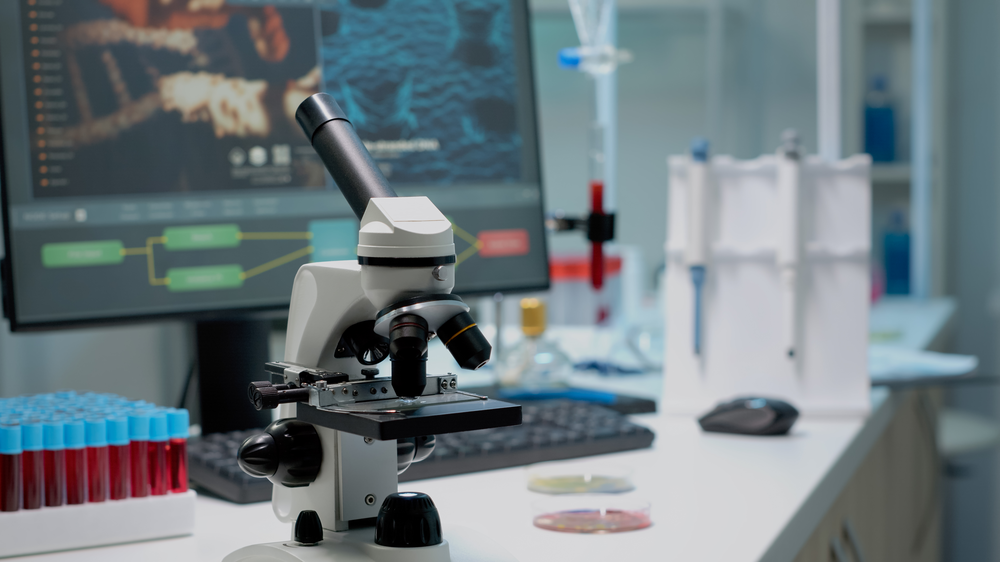
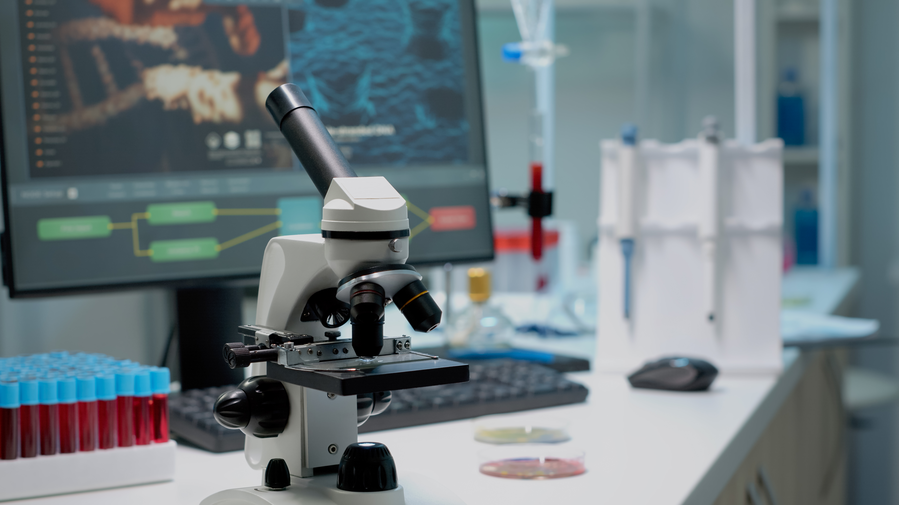

Laboratorium Terpadu
- Laboratorium Komputer
- Laboratorium Biologi
- Laboratorium Kimia
.........................................
.........................................
.........................................
Selamat Datang di
Website Laboratorium Terpadu
Fakultas Sains dan Teknologi
UIN Raden Fatah Palembang
Read MoreLaboratorium Terpadu
Laboratorium Terpadu UIN Raden Fatah Palembang terletak di area Kampus B UIN Raden Fatah Palembang, tepatnya di daerah Jakabaring, Kota Palembang. Laboratorium terpadu ini memuat berbagai jenis laboratorium mulai dari laboratorium kimia di lantai 2 yang terdiri dari laboratorium kimia organik, anorganik, kimia dasar, kimia analitik, dan biokimia. Kemudian di lantai 3, ada laboratorium biologi, yang terdiri dari laboratoriumgenetika, mikrobiologi, biomolecular, botany, zoologi, ekologi, histologi dan biologi dasar. pada lantai4, ada laboratorium komputer prodi sistem informasi, yang terdiri atas laboratorium jaringan, software, komputer umum, hardware, multimedi, forensik dan programmer.


 
